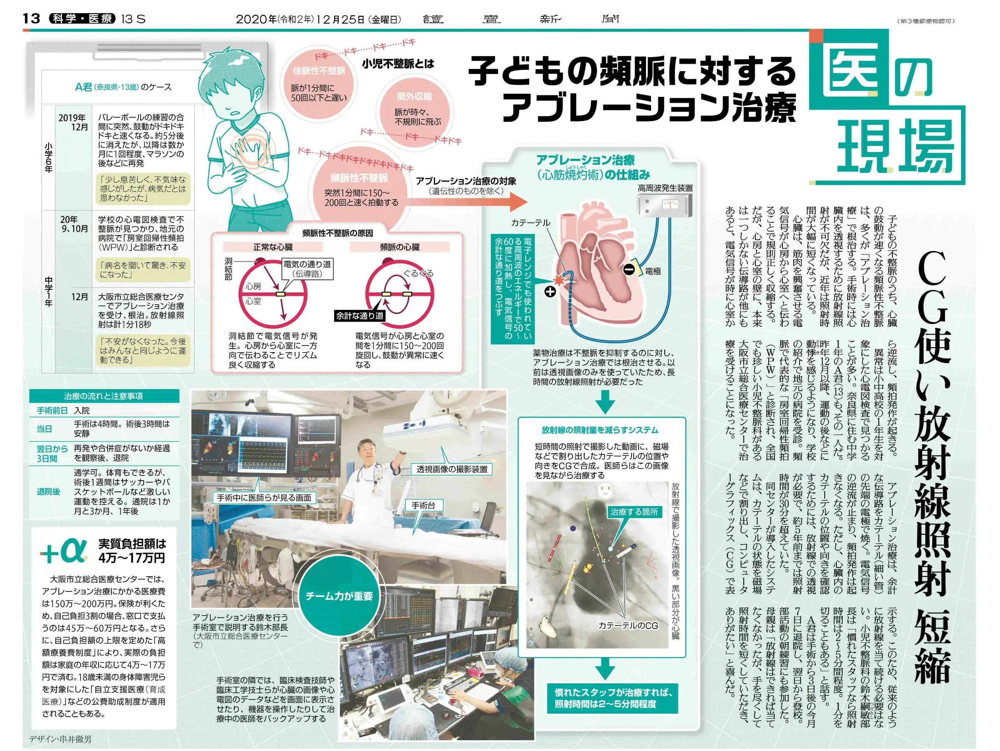
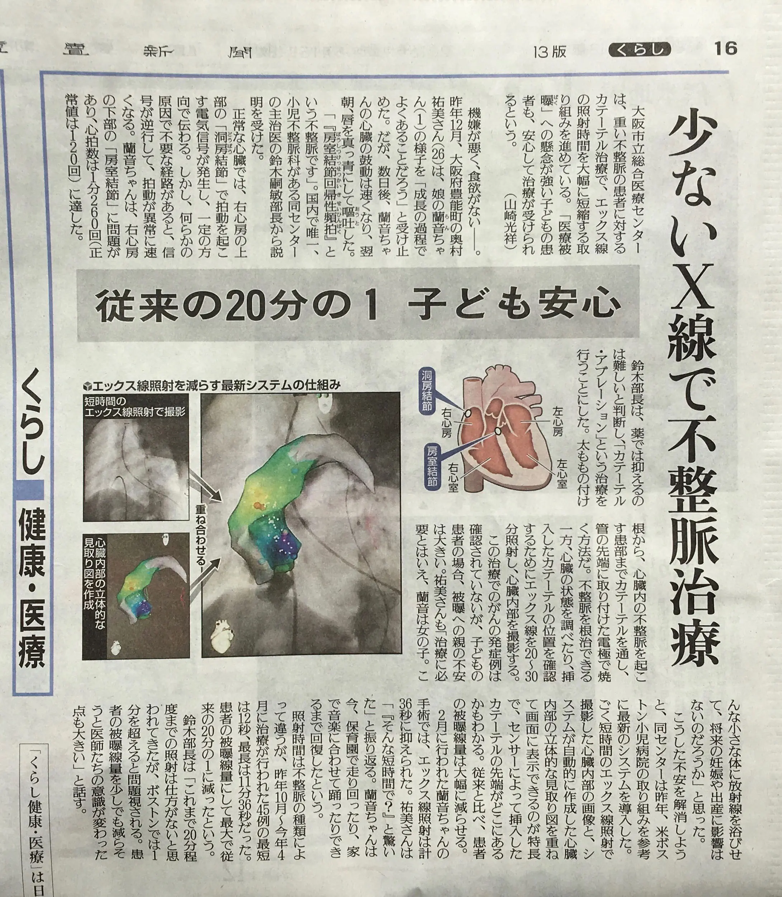
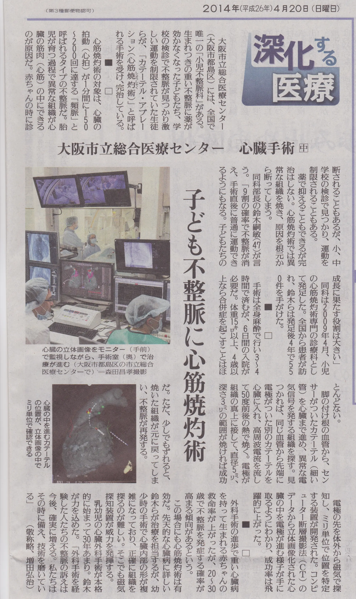
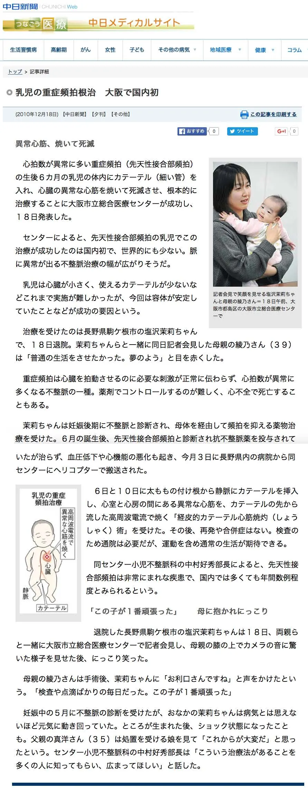
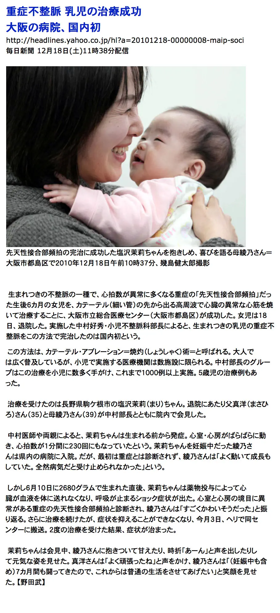
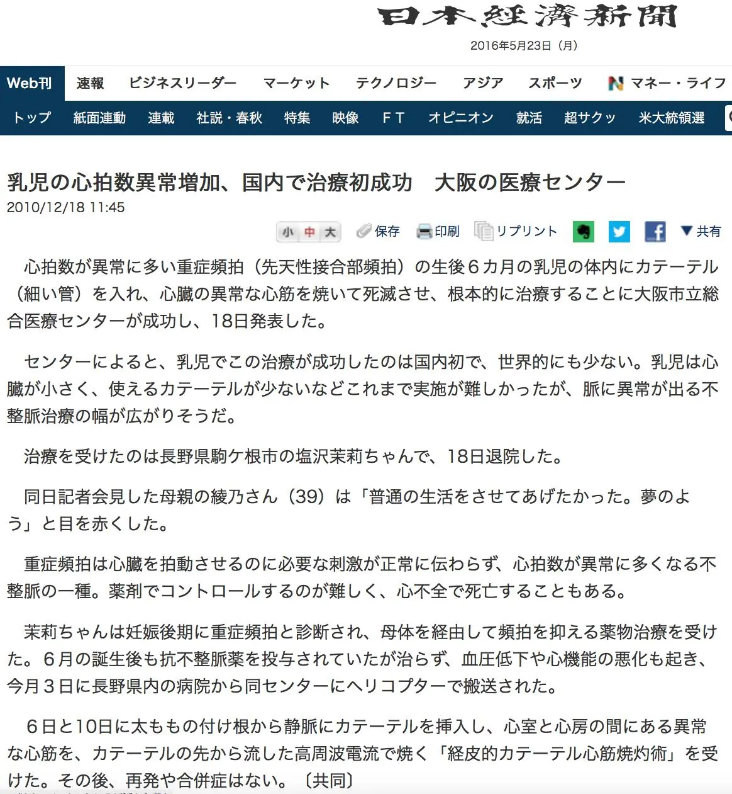

テレビニュース
2010年12月・約2分20秒 元の動画ファイル

Press & TV
こどもの不整脈の診療を取り上げていただいた記事と映像です。スクロールすると記事が近づき、見出しから本文へ、文字が読める大きさまで拡大していきます。
スクロール



2010.12.18
生後6か月の乳児の先天性接合部頻拍に対するカテーテルアブレーション治療について記者会見を開き、各社で報道されました。乳児でこの治療が成功したのは国内で初めてでした。



Television
2010年12月の記者会見のニュース映像です。再生ボタンを押すと読み込みます。